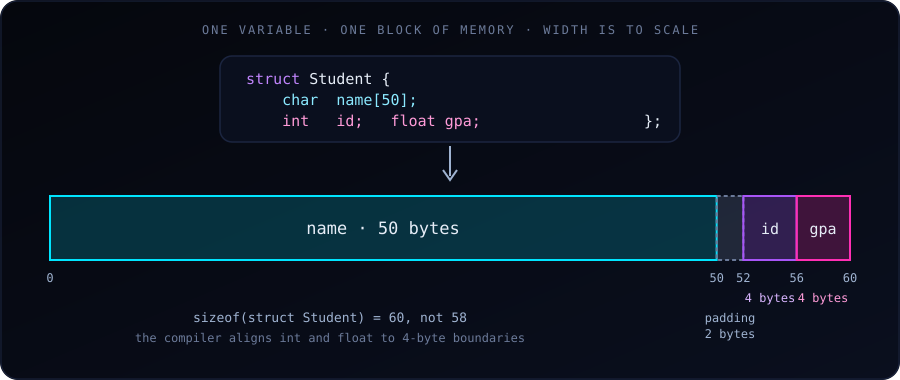

A struct (short for “structure”) lets you group related variables of different types into a single unit. It’s the C way of saying “these pieces of data belong together.”
This is something used more explicitly in R and Python. In Python, we’d write:
student = {"name": "Alice", "id": 101, "gpa": 3.8}In R:
student <- list(name = "Alice", id = 101, gpa = 3.8)In C, we use a struct to build this same idea — but with strict typing and a fixed layout.
The Problem Structs Solve
Suppose you want to track a student’s name, ID, and GPA. Without structs, you’d need three separate arrays:
char names[100][50];
int ids[100];
float gpas[100];This works, but it has problems: - The data for one student is scattered across three arrays. - If you pass a student to a function, you must pass three separate arguments. - If you add a new field (say, email), you must update every function signature. - It’s easy to keep the arrays out of sync — e.g., swap ids[3] with names[3] accidentally.
A struct fixes all of this by keeping the fields together.
Example 1: A Student Record
#include <stdio.h>
#include <string.h>
struct Student {
char name[50];
int id;
float gpa;
};
int main(void) {
// Declare and initialize
struct Student s1;
strcpy(s1.name, "Alice");
s1.id = 101;
s1.gpa = 3.8;
// Access and print
printf("Name: %s\n", s1.name);
printf("ID: %d\n", s1.id);
printf("GPA: %.2f\n", s1.gpa);
return 0;
}Key points:
struct Studentdefines a new type. It’s a template — no memory is allocated until you declare a variable of that type.s1is a variable of typestruct Student. It contains all three fields contiguously in memory.- The
.(dot) operator accesses individual fields:s1.name,s1.id,s1.gpa. - The fields add up to
50 + 4 + 4 = 58bytes, butsizeof(struct Student)is actually 60 on typical systems because of padding (see the diagram above and the gotchas below).
Example 2: Multiple Students, Passed to a Function
This is where structs really shine — you can pass an entire record as one argument.
#include <stdio.h>
#include <string.h>
struct Student {
char name[50];
int id;
float gpa;
};
void printStudent(struct Student s) {
printf("%-10s ID: %3d GPA: %.2f\n", s.name, s.id, s.gpa);
}
int main(void) {
struct Student roster[3] = {
{"Alice", 101, 3.8},
{"Bob", 102, 3.2},
{"Charlie", 103, 3.9}
};
for (int i = 0; i < 3; i++) {
printStudent(roster[i]);
}
return 0;
}Output:
Alice ID: 101 GPA: 3.80
Bob ID: 102 GPA: 3.20
Charlie ID: 103 GPA: 3.90Things to notice:
- An array of structs (
struct Student roster[3]) is how you build a “table” of records. This is the C equivalent of a data frame with 3 rows. - Initializer syntax:
{"Alice", 101, 3.8}matches the fields in declaration order. printStudenttakes one argument and prints all three fields. Compare this to a function that would needchar name[], int id, float gpaas three separate parameters — structs are cleaner.
Example 3: A Point in 2D Space
A simpler, more geometric example:
#include <stdio.h>
#include <math.h>
struct Point {
double x;
double y;
};
double distance(struct Point a, struct Point b) {
double dx = a.x - b.x;
double dy = a.y - b.y;
return sqrt(dx*dx + dy*dy);
}
int main(void) {
struct Point p1 = {0.0, 0.0};
struct Point p2 = {3.0, 4.0};
printf("Distance = %.2f\n", distance(p1, p2)); // Distance = 5.00
return 0;
}Compile with gcc point.c -o point -lm: on many systems sqrt lives in the math library, which must be linked explicitly.
This is the pattern you’ll use constantly in geometry, graphics, and simulation work. The distance function reads as “distance between two points” — much clearer than distance(x1, y1, x2, y2).
Example 4: A Linked List Node (Preview of What’s Coming)
Structs become essential when you build data structures. A linked list node in C looks like this:
struct Node {
int data;
struct Node *next; // pointer to another Node
};Notice the struct contains a pointer to its own type. This is how linked lists, trees, and graphs are built. You cannot do this with plain arrays. (The field must be a pointer to struct Node: a struct cannot contain itself by value.)
Structs vs. Arrays
| Feature | Array | Struct |
|---|---|---|
| Holds elements of… | Same type | Different types |
| Access by… | Index (arr[0]) |
Field name (s.name) |
| Size | Determined by element count | Sum of all field sizes |
| Purpose | List of similar items | One composite item |
A useful way to think about it:
Array = many of the same thing. Struct = one thing made of many parts.
A struct Student roster[30] combines both: an array (many) of structs (composite).
Structs vs. Python Dicts / R Lists
| C struct | Python dict | R list |
|---|---|---|
| Fields fixed at compile time | Keys added at runtime | Names can be added dynamically |
| Fields are typed | Values can be any type | Values can be any type |
Access with . |
Access with [] |
Access with $ or [[]] |
| Cannot store in a JSON-like flexible way | Very flexible | Very flexible |
The trade-off: structs are rigid but fast and type-safe. Python dicts and R lists are flexible but slower and error-prone. For performance-critical code (which C is used for), structs win.
A Few Rules and Gotchas
Always end with a semicolon.
struct Student { ... };— the semicolon after}is mandatory. Forgetting it is a common beginner error.You can use
typedefto shorten the name:typedef struct { char name[50]; int id; float gpa; } Student; Student s1; // no "struct" prefix neededThis is very common in modern C code. Most real-world C uses
typedef.You cannot compare structs with
==. This won’t work:if (s1 == s2) { ... } // compile errorYou must compare field by field, or use
memcmp(with caution due to padding).Structs can be passed by value or by pointer. Passing by value copies the whole struct (potentially many bytes). Passing by pointer avoids the copy:
void printStudent(struct Student *s) { printf("%s\n", s->name); // note the -> operator }The
->operator is shorthand for(*s).name. You’ll see it everywhere once you start using pointers with structs.Memory padding. The compiler may insert unused bytes between fields to align them properly. Here
sizeof(struct Student)is 60 rather than 58:nameends at byte 50, but theintmust start at a multiple of 4, so 2 bytes of padding are added (idat offset 52,gpaat 56). This usually doesn’t matter, but it’s why you shouldn’t assume a struct’s size is the sum of its field sizes.
When Should You Use a Struct?
Use a struct whenever two or more pieces of data logically belong together:
- A point (x, y) or (x, y, z)
- A date (year, month, day)
- A student (name, id, gpa)
- A bank account (number, balance, owner)
- A network packet (source, destination, payload)
- A configuration (width, height, color depth)
- A complex number (real, imaginary)
If you find yourself passing the same set of variables to multiple functions, or keeping parallel arrays in sync, that’s a signal you should define a struct.
A Practical Summary
Start with Example 1 (student record) and Example 3 (point). Write them, compile them, run them. Then modify them:
- Add a new field to the Student struct (e.g.,
char email[100]) and update the print function. - Write a function that takes two points and returns the midpoint (another struct Point).
- Build an array of 5 students and sort them by GPA.
Once you’re comfortable with these, structs will become a natural tool for organizing your data, and you’ll be ready for pointer-based data structures such as linked lists, trees and hash tables.